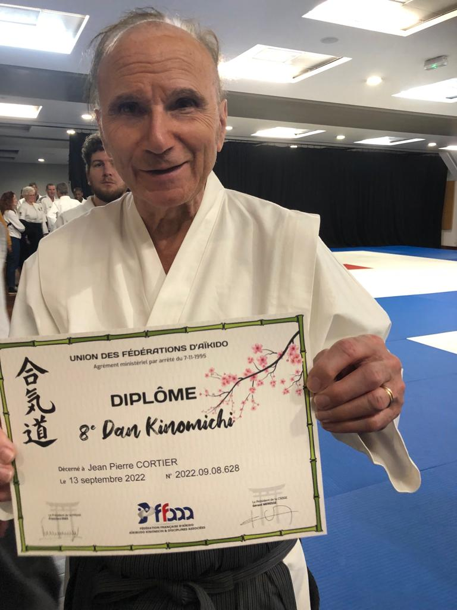

Ki No Michi
Professeur : Jean Pierre Cortier
Instructeur de l’institut – 8e dan

Lundi : de 16h00 à 19h00
Le Ki No Michi puise dans la tradition extrême orientale (son fondateur, Mr NORO a été l’un des derniers disciples du grand Maître UESHIBA, créateur de l’Aïkido) tout en s’inspirant des découvertes occidentales dans le domaine des gymnastiques douces et de la relaxation dynamique : étirements, auto-massages, travail sur le son, mais aussi contact et mouvement avec partenaires, exercices de canne ou de sabre… : c’est une voie qui vise, en sentant où est « le blocage » et comment il est possible de l’aborder, à libérer la pleine énergie de chacun.
Contact : --------- ou Jean Pierre CORTIER au ---------
Site internet : www.kinomichi-lille.eu
Des informations complémentaires sont disponibles sur le site: tarifs, horaires, calendriers, adresse, vie associative, etc.
Nous vous invitons à vous inscrire sur la newsletter sur ce site afin de recevoir les différentes informations importantes envoyées durant la saison.
Bienvenue et à bientôt.
CLUB LILLOIS DE JUDO KENDO